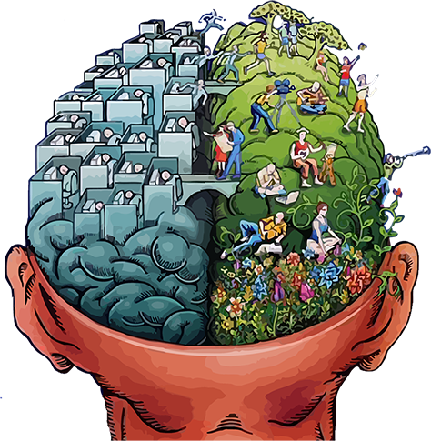

Do you think your child is Expressing their true genius? And don't you believe your child can do much better?
So, Have you ever wondered about the next step for the enhancement of your child’s abilities?
Do you want your child to be more excited about studies?
Do you want your child to be more relaxed when learning?
Do you want your child to be a Quicker Learner, understand concepts easily and hence score better?
Do you want your child to enhance their Ability to Think?
Do you want your child to Have the Confidence to Excel at Multiple skills? Academics? Social skills? Sports? Arts? Music ?
The purpose of Quick Sparks is to enable students to Rediscover the Ease & Joy of Learning and to Express the Genius within them using Brain Friendly Learning methods.
Quick sparks is about using the methodology of Multiple Intelligences in Children : Making them Word Smart, Logic Smart, Picture Smart, Body smart, Music Smart, People Smart and Self Smart to build a well rounded personality for themselves. Quick sparks programs are designed with exercises, techniques and activities for Whole Brain Learning : using both their Creative and Logical faculties together for more Effective Learning. Activities from Educational Kinesiology and games designed around proven memory techniques make academic learning more exciting than ever. Learning strategies and principles from the methodologies of Neuro Linguistic Programming (NLP) and Accelerated Learning are also incorporated. The role of music, emotions and movement in learning are explored. Children also participate in a variety of activities which support them in exploring Art, Music and Drama.
For Ages 9 to 12
Duration: 3 days
In addition to the 3 days, We also provide a Free 1 day seminar with parents to share ideas and tips about How you can best support your child’s learning & development and nurture their potential for long-term benefits!
For Ages 13 to 17
Duration: 4 days
In addition to the 4 days, We also provide a Free 1 day seminar with parents to share ideas and tips about How you can best support your child’s development and nurture their potential for long-term benefits!
Duration: 6 months
For Ages: 9 to 12 (Junior) and 13 to 17
How to Manage their time and resources effectively: Students learn to take responsibility, manage their resources, and plan the use of their time effectively for their overall success.
"The mind is not like a bowl that is filled, it is like a tree that Grows..."
Hence, we insist on dedicated practice and application for continual improvement.
We also provide a Free 1 day seminar with parents to share ideas and tips about How you can best support your child’s development and nurture their potential for long-term benefits!